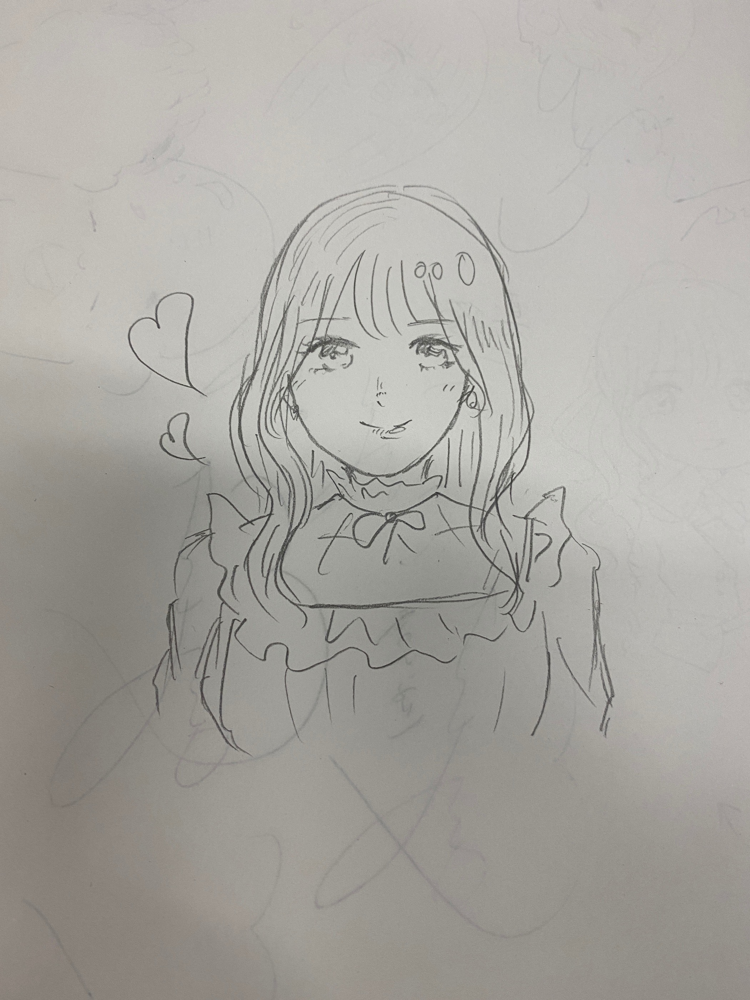
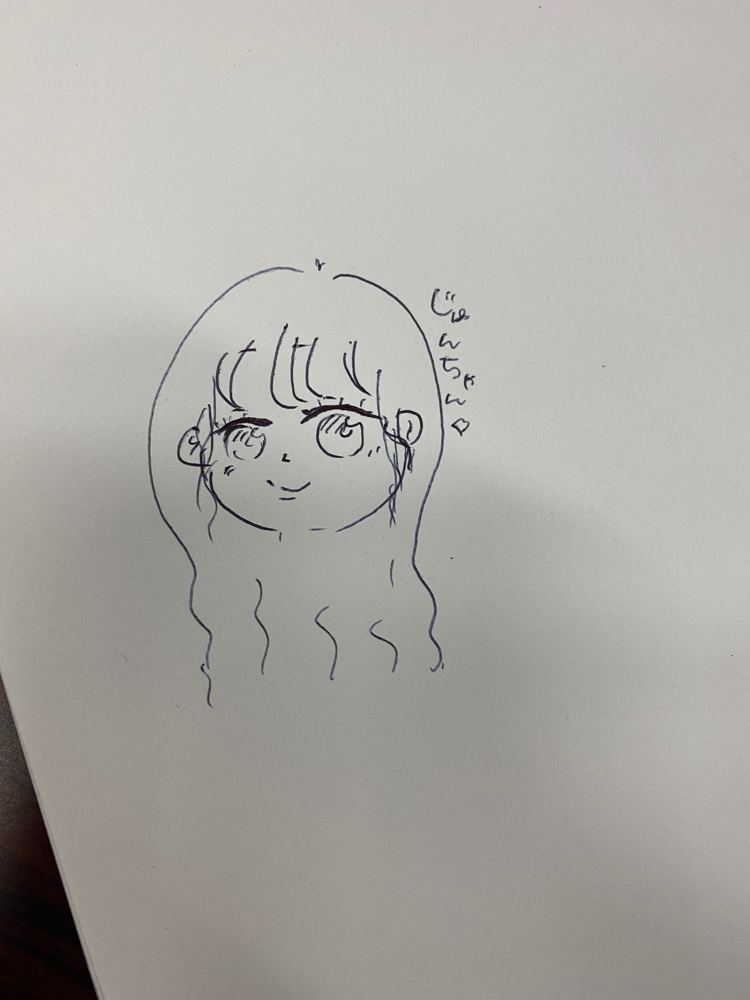
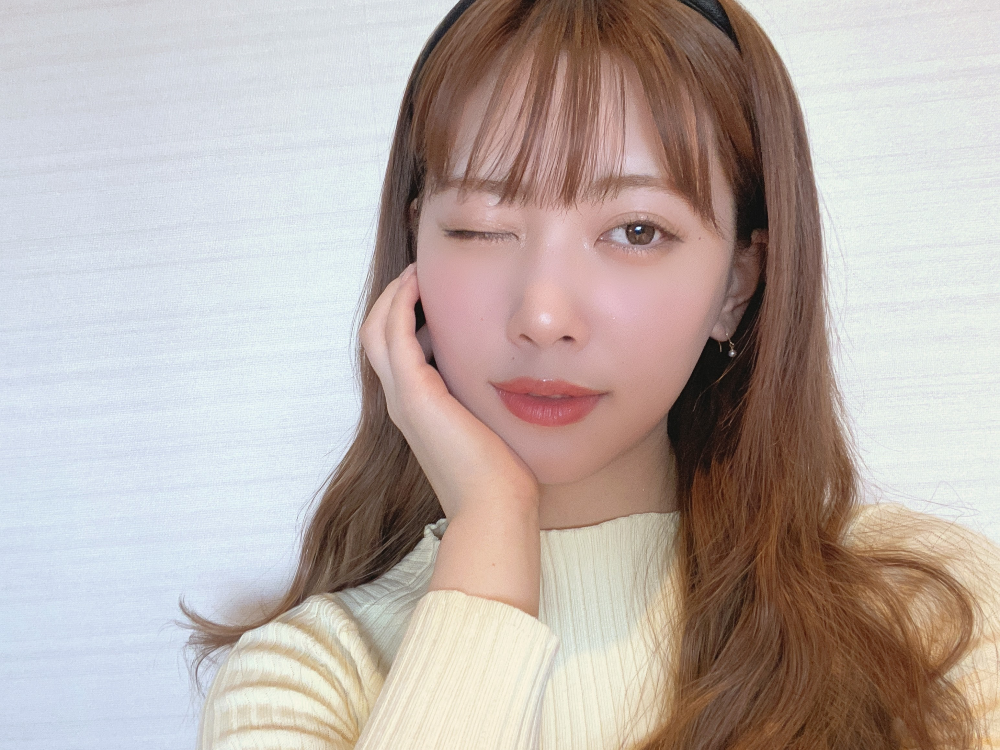
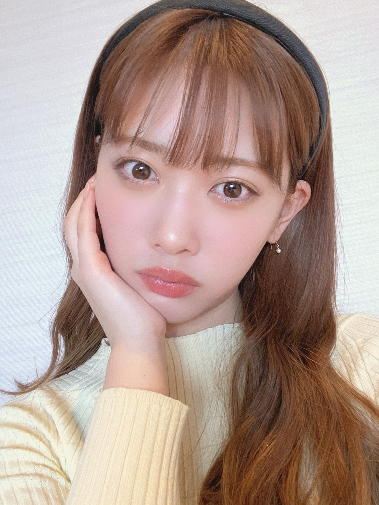

2021/0323Tue遠回りして帰りたい日もある
本日、
シブヤノオト出演します♡
おたのしみに〜〜
こんばんは！
伊藤純奈です
みおデザインのパーカー！
かわいくてお気に入り〜〜〜
賀喜ちゃんとまゆが
似顔絵をかいてくれました♡
これが賀喜ちゃん作

まゆ作

2人とも上手すぎて
お姉さんびっくりしたꪔ̤̥
うれしい〜素敵すぎる才能！！！
ありがとうふたりとも♡
もうすぐで2期生ライブです！
まだ実感がわかないけどみおなの
乃木坂としての最後の日でもあります。
やっと、やっと出来る2期生ライブで
とってもうれしい気持ち☺︎
思い出に残る1日にしよう...！
また直前にブログ書きますね〜〜
EX大衆発売中です、れのと
取材してもらいました☺︎ぜひ〜


(とりあえず自撮り載せておくスタイル)
それでは！
2021/03/23 17:00


コメント(292)
そしてオンラインミートで、笑顔な所が可愛い くてとっても優しいと思いました❣️
更にはきちんと応援して居ます❣️
今日もいい天気だね☀️引き続き体調に気をつけて過ごしてね！
2期生ライブまであと3日！日に日に楽しみが増していくよ！笑
シブヤノオトお疲れ様でした。帰り道やっぱりいいよね。この振りいつも楽しそうに踊っているイメージです。
そしてもうすぐ2期生ライブ。今頑張って打ち合わせしてるから、ちゃんと見つけるんだぞ！笑
それじゃあね、またコメントします。
シブヤノオトとっても素敵だったー！！！
純奈ちゃんがたくさん見られて嬉しい！
ライブも楽しみにしてるね！
むっちゃかわいい。
今年は会えるようになればいいな。
誰か分からないと思うけど次から握手会は大阪に行くと思いまーす。
元気でね〜♡
ブログありがとうございます。
純奈さんの今の気持ちが垣間見ることが出来、嬉しく思います。これからも発信宜しくお願いします。
シフヤノオトは笑顔の純奈さんで溢れていて、こちらも知らず知らずに笑顔になっていました。ありがとうございました。
二期生ライブを楽しみにしています。
最高の笑顔とカッコいいパフォーマンスを期待しています。悔いのない様にみおなさんを送り出してあげて下さい。
がんばれ純奈さん❗
今日も一日元気出していこー！！
プロ野球も開幕だね！ベイスターズ頑張ってもらおう
3/14ミーグリ行きましたありがとうございました！お絵描きしてたあいつです…覚えてくれてるかな…(*･ω･)笑笑
かっきーとまゆたんやっぱ絵上手い…私にゃ上手く描けなかった(*T^T)
もう最高でした初めて行ったから凄い緊張してたけど純ちゃんとちゃんとお話できて本当に良かったです！また絶対行きます！！
本当にありがとうございました！
シブヤノオト観ました！生放送の音楽番組で純ちゃん観れて嬉しかったです(*>∀<)
しかもフルコーラスで「も～う、好きっ！」ってな感じで悶えてました笑笑
2期生さんライブ観たいけどマネーが ( ；∀；)
頑張って下さい！
これからもずっと応援してます！
純ちゃん大大大大大大大大大大大好き！
はづきより
持って帰りやすいよーにしてあるから絶対見てね！ね！笑
私達の思いが届きますよーに☺︎☺︎
土曜日？やべっ。実は、「浮気」をしてしまいまして、、、土曜日開催の「日向坂」のライブの申込みをしてしまいましたが、、、ギリギリ重なっていない、、、良かった。そこは、ちゃんと坂道の中で調整してあるのですね。当たり前か。
もしも、重なっていた場合は、もちろん「本命」の2期生座談会優先のつもりでした。何よりも代えがたいですからね、2期生は。
まゆのは可愛いし
まあ、モデルが良いからね
シブヤノオトはまだ見てないので今日にでも見まーす。
それじゃ☆ミ
純奈さんって書道の腕前が師範級だそうですね。才能の塊ですね。先日のシブヤノオトで、ちょうど書道とのコラボということで、純奈さんの胸にも刺さるものがあったのでしょうね。アイドル代表として、是非teppen書道に出てほしいですね。
これからも、自分磨きをして、ますます輝いてください。
日頃から癒していただいていますが、「感謝」です。
明日の２期生ライブ、楽しみにしてます
ハイトーンカラー×ロングヘアの純奈ちゃんしか勝たん！
そういえばね、くろみんがブログで、純奈ちゃんと写真撮ってもらったことに喜んでたよ！！
わたしも純奈ちゃんと写真撮りたいよ、、、！(笑)
大好きです！
明日の2期生LIVE楽しみです！
頑張ってください！
ふよう
本当に個性的な8人だなぁと思う。それはとても良いこと。8人とも素敵。
一人一人魅力溢れてすぎて本当2期好き〜。
明日は怪我なく無事に気をつけて楽しんでね〜。
黒見ちゃんのブログでのエピソードが可愛い。本当にみんなに優しいね。
笑顔が最高。
明日を楽しもう。
いつもありがとう。
アベマのやつ見たよ！2期生の絆ってすげーな！いよいよ明日だね。なんか楽しみだけど、寂しくもなるよね。遂に来たかというかね…なんか色々感慨深いライブになりそうな感じがする。でも本当にやっと純奈の大きな願いでもあったサヨナラの意味を歌える日が来たんだな。俺もずーっと待ってたよ。この曲を引き継ぐのは私だ！って言う気持ちを全面に出して歌って来いよ！頑張れ！純奈！そして、ありがとう堀ちゃん！
「緊急生特番」の純奈さんは，指定席の端におられましたが，新しい晴天の一日を告げる東の空から登る朝日のような輝きを放っていましたね。未央奈さんに借りたカチューシャ（？）もお似合いでした。あどけない可愛い14歳の純奈さんも見られて得した気分です。ハチャメチャな座談会でしたが，皆さんの仲の良さが伝わる素敵な場でした。またまた，機会を作ってたくさんの思い出話を聞かせてください。
８年後の自分に向けることばとして聞きたかったなあ，「未央奈（さん）の分も７人で乃木坂の一員として８年後も頑張っていますよね」って。
明日が皆さんにとって永遠に心に残る一番の思い出になりますように。
今日は、いよいよ２期生ライブ当日
未央奈の最後の晴れ舞台だね
楽しみだけど
涙を堪えきれるかなぁ。。。
今から言うことは
独り言です
乃木坂46というグループは
メンバー一人ひとりが輝いていて
素晴らしい個性の集まったグループです
誰かに足りないところがあったら
誰かがそれを補うことのできる
あたたかいグループです
失敗しても
きちんと反省は反省として
それを今後の活動で返していける
気風のあるグループです
誰かが困っていたら
手を差し伸べてあげることのできる
素敵なグループです
そんな乃木坂46は
世界一素晴らしいグループです
前夜祭、バースデーライブお疲れ様でした！
2日間共観てたよー
素敵なライブでしたね(๑>◡<๑)
9歳のお誕生日おめでとうございます！
これからも応援しております（╹◡╹）♡
いよいよ2期生単独ライブですねー
Abemaでの配信も観ましたよー
お休み取れたので見守ります✌︎('ω'✌︎ )
みおなちゃんの卒業でもありますね
寂しさもありますが楽しんでね！
前日祭観たよー コメントの早さに、まとまりの強さを感じるわ。
今日の２期生ライブも期待しております。未央奈ちゃんの良きはなむけになりますように。
体調には気をつけて頑張ってくださいませ
初めて参加させていただきました。
短い時間でしたがお話できてとても嬉しかったです。
ありがとうございました。
ミーグリでお話しましたが、後輩たちが甲子園初出場したので応援してきました。
試合は残念ながら負けてしまったのですが、
自分たちの野球に徹して強豪校相手に接戦を演じ、
甲子園を沸かせてくれました。
甲子園で校歌も聞けました。
後輩たちに感謝、感謝。
きょうは2期生ライブですね。
もちろん、見ますよ！
ライブ楽しみましょう！！
では、また。
今日は２期生の期別ライブですね
堀未央奈ちゃんが
出演する最後の舞台...
今からワクワクとソワソワと
そして、、、寂しさが
混ざり合って感情がぶわーっとなってます
卒業おめでとう
未央奈ちゃん！
未央奈ちゃんの未来に幸あれ！
最近は、いろいろと騒々しいです
厳しさと優しさと愛で
すべてを包み込んでください
これからも乃木坂を応援してます
純奈さん、めちゃくちゃキレイっっす！！
二期ライブ待機中です！！！
あー楽しみー！悲しい事もあるけど、
はやく、純奈さんに会いたいです！
どうぞ体調には気をつけて下さい！
今日は、雨からスタートでしたね、、、
☆『２期生ライブ』PC前で待機中です、、、、
きっと、見逃し配信ないと思って、
目に焼き付けたいと思います !!
今、きいちゃん、まいちゅんの注意です、、、
☆ Abema の前夜祭も生で見ました、、、
純奈の衣装、未央奈から借りたもの ?
似合っていたよ、、、
カチューシャもかわいかった !!
第３波は下山中でしょうか、、、東京は下げ止まり??
東京圏『緊急事態宣言』解除!!
またまだ寒い冬も続いています、、、
くれぐれも身体を大切にしてくださいね。。。。。
いよいよ乃木坂２期生ライブ、
始まるね‼️
最後までしっかり楽しみます‼️
未央奈ちゃんとの最後の乃木坂での
ライブ、
最後までしっかり楽しんで下さい‼️
応援してます‼️
がんばれ‼️
２期生ライブ見てました
パフォーマンスはキレッキレで
みんな、格好よくて、可愛くて
キラキラ輝いていてたなぁ
アナスターシャからはじまり
アナスターシャで終わる演出が凄く
良かったです！
未央奈ちゃんのドレス姿が
すっごく綺麗で見ていてうっとりしました
本当に綺麗だったよ！
２期生愛、乃木坂愛が伝わる
素晴らしいライブでした
最後に他の期のメンバーが出てきたときは
びっくりしました
嬉しい驚きってやつです
未央奈ちゃんが想いを語るときは
涙腺崩壊でしたよ
家族、メンバーだけでなくスタッフさんや
ファンにまで感謝の気持ちを述べてたのは
本当に嬉しかったよ
僕たちは何もしてないよ
未央奈ちゃんやメンバーの努力で
今の乃木坂があるんだよ
明日からは未央奈ちゃんがいない
乃木坂になるんだね...
寂しいけど、未央奈ちゃんと
乃木坂をこれからも全力で
応援していきますね！
ありがとう
2期生ライブ、おつかれさま！
配信見ていたよ～♪
純奈、全員センター企画で『サヨナラの意味』を歌っていたよね。
すごいね、正直この曲を選ぶとは驚いたよ
たしか、いつかの乃木中のバレンタイン企画で2期生が1期生メンバーにチョコレートを渡すとき、純奈はななみんに「推しです！」って言って渡していたよね？
それを思い出した！
・・・それが関係あるか分からないけど、とにかく純奈がこの曲をこのライブで歌っているのを見たのはちょっと感動だったよ
最後になりましたが、2期生お誕生日おめでとう( ＾▽＾ﾉﾉ""8888
これからも純奈のご活躍、期待しているからねっ！
2期生ライブおめでとう、
そして感動をありがとう、
最初から最後までほとんど泣いてたかも
キレイな映画を見てるような
キレイなドキュメントを見てるような
あたたかい気持ちになりました
本当にありがとう♡
『サヨナラの意味』
涙が溢れたよ、
嬉しかった、
リスペクト軍団忘れてないよ
5thは今でも定期的に見ちゃいます
純奈が今度は引っ張っていってね
いつもありがとう
今日はお疲れ様でした！
けんた☆
今日は、雨からスタートでしたね、、、
☆『２期生ライブ』アフター配信まで見ましたよ、、、、
配信になったのは残念でしたが、
こういう形で、未央奈を送り出せたことは、大変よかったですね。
アンダー推し、２期生推し、純奈推しで、心よりよかったと思いながら、
純奈やみんなの一挙手一投足に、ときに涙しながら、、、
最後まで見ていましたよ !!
今、見逃し配信を見ながら、書いています。
ちょうど、全員センターで、純奈が
「この乃木坂の雰囲気を作ってくれたのは、
１期生の皆さんです。ずっと尊敬しています。」
と言って、
『サヨナラの意味』が始まったところです。
もう一度、最後まで確認したいと思います。
らんぜが絶対選ぶと思った 『ボーダー』が流れています。
また感想とか、書きますね、、、
第３波は下山中でしょうか、、、東京は下げ止まり??
東京圏『緊急事態宣言』解除!!
またまだ寒い冬も続いています、、、
くれぐれも身体を大切にしてくださいね。。。。。
飛び抜けて素敵な歌声をたっぷり聴かせてもらいました
なかでも「サヨナラの意味」が流れたときは鳥肌が立ちました
何年も思い続けて実現させた一途さと意志は尊敬です
これからも素晴らしいライブ楽しみにしています
地方公演の舞台も期待しています！
ほんとに夢が叶ったな。サヨナラの意味のイントロが流れた時涙が出てきちゃったよ。4年間長かったな、、でもなんか俺もやっっっと見れたとなんか奇跡を見てるみたいだった。純奈がセンターで美しい涙を流しながら最高の歌声で歌ってる姿、まさしく今日は奇跡を見たと俺は思ってる。2期生ってさ最高の仲間たちだな。堀ちゃんは旅立って行くけど、残っている人たちでこれからのこの乃木坂というチームを盛り上げて、中心となって更に大きなものにしていって欲しい！個人的にはまた純奈のサヨナラの意味を見たい！ ほんとに今日は感動を与えてくれてありがとう！俺が待ち望んでた夢が叶ったよ。じゃあ、ゆっくり休んでねお疲れ様！おやすみ
多くのランキングで乃木坂歴代最も人気のある「サヨナラの意味」を歌わせてもらえたのは、やはり、純奈さんの歌唱力が認められている証拠ですね。未央奈さんを見送るのに最高の贈り物になったのではないでしょうか。緊張されている中でも、あの美声を披露できたのだから、また聞きたいと思うファンがたくさんいるはずです。最初で最後のチャンス？違うと思いますよ。最後の涙も素敵でした。
8人の絆も素敵だったし、未央奈さんも最高に輝いていました。
お疲れ様でした。
昨日の２期生ライブの興奮が
覚めやらぬまま
今日は早起きです
未央奈のドレス姿が
綺麗だったなぁ...
パフォーマンスもさすがの２期生でした
純奈、日奈子、まいちゅん、絢音
蘭世、未央奈、れなち、みり愛
それぞれの個性が光っていて
特に全員センター企画では
想いをのせたパフォーマンスに
グッときました
鑑賞中はずっと涙が止まらなくてね
一挙手一投足を逃すまいと
目に焼き付けていましたよ
みんなの笑顔が眩しくて
仲の良い２期生が大好きです
感動のライブをありがとう
そして卒業おめでとう未央奈！
さて、
今日は１期生ライブですね
２期生ライブに負けないよう
１期生の底力を見せてもらいます
乃木坂の源流をつくった
１期生のことは本当に尊敬しています
真夏、いくちゃん、飛鳥、かずみん
ひなちま、みなみ、まっちゅん、まあや
みんな、大好きです
圧巻のパフォーマンスでした
歌、ダンス、表現力
どれも素晴らしかったです
堀未央奈ちゃんの挨拶は
感動しっぱなしで
どれも、うん、うんと頷きながら
聞いていました
メンバー、家族、友だち、スタッフさん
そしてファンの皆さんへの感謝に
溢れていて未央奈ちゃんの人柄が
よくわかる素敵な挨拶でした
今まで本当にありがとうございました
おかげでたくさんの愛と勇気を貰いました
お疲れさま、未央奈ちゃん
卒業おめでとう！！
そして今日は一期生ライブ当日ですね
楽しく盛り上がっていきましょう！
そして念願の２期生ライブが開催出来たこと本当に嬉しかったよ！
１年越しの２期生の為のライブを２期生の誕生日に開催出来たこと。そして未央奈ちゃんの最後のステージをみんなで送り出せたことが本当に感動的でした。
全員センター企画では『サヨナラの意味』をありがとう。１年前の幻の２期生ライブの時もこの曲以外の選択肢はなかったと話していたね。
１期生へのリスペクトやこの曲への想い。
ずっとリスペクト軍団だもんね。純奈ちゃんの変わらない想いが素敵だし、センターで披露する姿とても綺麗だったよ。
２期生みんなからの未央奈ちゃんへのお手紙のサプライズとても感動だったし素敵な時間でした。
アフター配信もとても楽しかったよ！
バスラでは披露出来なかった『サイコキネシスの可能性』が見れたのも嬉しかったし、間奏部分は流石だね(笑)
最後に、
どんな場所に立っていても２期生のこれからの活躍を楽しみにしているし応援してるよ！
サヨナラの意味
よかったよ。
個人的には、優勝です。
それでは！
ひでき
8周年おめでとう！！！8年間ありがとう(T_T)♡
ライブ、すっごく幸せでした。
みんなが2期生ライブを噛み締めているのが伝わってきて、大切な時間でした。みんな、8年間も頑張ってくれてありがとうって心から思いました。
カッコよかった！光が当たらなくても、頑張ってきたんだなっていうのが伝わって、今、目が腫れてます笑
本当に幸せだったな
純奈ちゃん、大好きです！
純奈ちゃん、本当に本当にありがとう！純奈ちゃんがどこにいても絶対に見つけ出すよ。純奈ちゃんが1番好きだよ〜
純奈ちゃん以上のアイドルはもう出会えないよ。幸せな時間をありがとう！
乃木中もめちゃくちゃ面白かった〜昨日、本当に幸せだった。純奈ちゃんから、二期生から、もらった元気で今日からも頑張ります。
いつもありがとう！
早く伝えたいな。
２期生ライブお疲れ様でした。僕は見れませんでしたが、全力で応援していましたよ。
乃木坂工事中、僕は見たよ。録画してみました。堀未央奈が卒業前にやりたかったこと。でしたね。
２期生ハウス、とても楽しそうでしたね。
じゅんなちゃん、めっちゃ綺麗で、めっちゃかわいかったです。
カラオケ、とても楽しそうにでしたね。
じゅんなちゃん、体調に気をつけて仕事頑張ってね。
またコメントするね。
「サヨナラの意味」の時の純ちゃん、素敵でした。涙もきれいでした。
約3時間と長かったと思います。ゆっくり休んでね。
これからも応援しています。
二期生ライブお疲れ様でした。
サヨナラの意味を聞けて本当によかったです。
本当に素敵でした。
「サヨナラの意味」感動した‼︎
私の優秀なスマホの今朝のGoogleニュース3番目が未央奈さんのブログ更新でした。もちろん一番上は昨日のライブのニュース。閲覧している内容が偏っているとは言え、ブログ更新がニュースとなるのは、普通ではないですよね。
ライブで、未央奈さんが言葉に詰まるぐらいに「嫉妬の権利」に強い思い入れがあるという感動的なお話が聞けて、2期生のことがますます好きになりました。アンダーライブで、この曲のセンターを純奈さんが任されたということは、2期生の皆さんの思いを背負ってのパフォーマンスだったということね。皆さんの思いを噛みしめて、昨晩は、何回も視聴しなおしました、皆楽しそうにしていた乃木中の後で。
今日は平日ということで、1期生ライブはリピート配信で視聴せざるをえませんでしたが、リピート配信の時間は、丸被りでしたね。今や純奈さんの持ち歌の「サヨナラの意味」のCDTVでの4期生パフォーマンスとアンダーライブの再放送。
1期生ライブのクライマックスは、アンコールで！「ボーダー」が聞こえてきたら鳥肌が立ちました。そして、やはり、クライマックスの純奈さんのパートを生田さん！最後に「左胸の勇気」が披露されましたが、1期生にとって思い入れのある曲だったとは！純奈さんは、またまた重要なところでセンターを務められたのですね。色々と裏側がわかると、ますます親近感が湧いてきます。
２つのライブと色々なイベントと長期に渡り本当にお疲れ様でした。今日から、未央奈さんのみならず、残ってくださっている皆さんにとっても新しい始まりですね。また、素敵な笑顔を見せてください。
2期生ライブ、かっこよかったですよー！！
みんなの繋がりの強さとやさしさ
とっても、伝わってきました(^^♪
アフターの中でのお題も、笑っちゃいましたけれど
早く
リアルに応援したいものです
これからも、がんばって！！
コメントする